<title>Layout 1.a before and after</title><style>
    :root{--bg:#f6f6f3;--fg:#1f2421;--mut:#5f6a64;--line:#d7dbd6;--ok:#178a42;--bad:#b23a2a;--card:#ffffff;color-scheme:light}
    @media (prefers-color-scheme:dark){:root:not([data-theme=light]){--bg:#15181a;--fg:#e6e8e4;--mut:#a6ada8;--line:#2d3331;--card:#1d2124;color-scheme:dark}}
    :root[data-theme=dark]{--bg:#15181a;--fg:#e6e8e4;--mut:#a6ada8;--line:#2d3331;--card:#1d2124;color-scheme:dark}
    body{margin:0;background:var(--bg);color:var(--fg);font:15px/1.5 -apple-system,Helvetica,Arial,sans-serif}
    main{max-width:1240px;margin:0 auto;padding-block:24px;padding-inline:16px;min-width:0}
    h1{font-size:24px;margin:0 0 4px}h2{font-size:18px;margin:36px 0 6px;border-top:1px solid var(--line);padding-top:16px}h3{font-size:15px;margin:18px 0 4px}
    p{margin:6px 0}.mut{color:var(--mut)}
    .pair{display:grid;grid-template-columns:1fr 1fr;gap:12px;margin:10px 0}@media(max-width:700px){.pair{grid-template-columns:1fr}}
    figure{margin:0;background:var(--card);border:1px solid var(--line);border-radius:8px;padding:8px;min-width:0}
    figure img{width:100%;height:auto;display:block;background:#fff;border-radius:4px}figcaption{font-size:13px;color:var(--mut);margin-top:6px}
    table{border-collapse:collapse;font-size:14px;margin:8px 0;display:block;overflow-x:auto;max-width:100%}td,th{border:1px solid var(--line);padding:4px 10px;text-align:left;white-space:nowrap}
    td.num{text-align:right;font-variant-numeric:tabular-nums}.ok{color:var(--ok);font-weight:600}.bad{color:var(--bad);font-weight:600}
    </style><main>
<h1>Layout experiment 1.a: before and after session 2</h1>
<p class='mut'>Before = the board when session 2 began (commit 293dc11, md5 f70595e5…). After = the board now (b22752f, md5 de2e14fb…). Same renderer for both (<code>tools/render_layers.py</code>), same regions and scale as the design review. Generated by <code>tools/before_after.py</code>.</p>
<h2>The short version</h2>
<p><b>Nothing moved.</b> 138 footprints before, 138 after, <b>none</b> changed position, rotation or side (T1 was tried 0.3 mm east and put back). The board is 46 × 65 mm in both. What changed is copper only.</p>
<table><tr><th>Measure</th><th>Before (293dc11)</th><th>After (b22752f)</th><th></th></tr>
<tr><td>Pairs shorted P–N at the transformer pads</td><td>both</td><td>none</td><td class='ok'>better</td></tr>
<tr><td>Open links besides J1's no-connect pair</td><td>3</td><td>0</td><td class='ok'>better</td></tr>
<tr><td>DRC errors of new copper</td><td>16</td><td>0</td><td class='ok'>better</td></tr>
<tr><td>Class-clearance items / dangling vias</td><td>6 / 1</td><td>0 / 0</td><td class='ok'>better</td></tr>
<tr><td>Pairs (mm; limits 9.5 / 9.5 / 21.3 / 21.3)</td><td>10.7 / 8.59 / 18.24 / 18.88</td><td>9.46 / 8.80 / 17.98 / 18.62</td><td class='ok'>better</td></tr>
<tr><td>Sofar's ~{ADIN_INT} fan-out</td><td>cut by the region clip</td><td>whole (hand via)</td><td class='ok'>better</td></tr>
<tr><td>ADIN_MISO / ~{ADIN_CS} copper (mm)</td><td>38.5 / 39.8</td><td>66.5 / 67.6</td><td class='bad'>worse: a 25 mm detour down the west edge past the inserts</td></tr>
<tr><td>Vias on ~{ADIN_CS} / ADIN_PWR</td><td>2 / 2</td><td>6 / 10</td><td class='bad'>worse</td></tr>
<tr><td>Vias in all</td><td>269</td><td>277</td><td>+8 (2 fan-out, 1 hand via, zone / stitching)</td></tr>
<tr><td>GND track copper (mm) / GND vias</td><td>108.7 / 78</td><td>54.1 / 71</td><td>fewer pour-island joins and stitching vias; the pours do the work</td></tr>
</table>
<p>So: the things the QE and the brief measure got better, and two signal nets got longer. The SPI detour is the cost of crowding the pocket's exits (the pairs, U2/U3's fan-out vias and the Internal 2 corridors for 3V3 / 1V8 / ADIN_PWR all leave there now), and it is the strongest argument for the 2 mm of width you offered: with a reserved Internal 2 lane under U1 the SPI goes straight east to J1 as the plan said.</p>
<h3>Copper per layer</h3><table><tr><th>Layer</th><th>Before: segments / mm</th><th>After: segments / mm</th></tr>
<tr><td>Top Layer</td><td class='num'>437 / 298.4</td><td class='num'>444 / 304.6</td></tr>
<tr><td>Internal 1</td><td class='num'>272 / 179.9</td><td class='num'>311 / 187.2</td></tr>
<tr><td>Internal 2</td><td class='num'>773 / 397.3</td><td class='num'>862 / 458.0</td></tr>
<tr><td>6 Bottom Layer</td><td class='num'>626 / 336.5</td><td class='num'>521 / 261.5</td></tr>
<tr><td>vias</td><td class='num'>269</td><td class='num'>277</td></tr><tr><td>filled zones</td><td class='num'>14</td><td class='num'>15</td></tr></table>
<h3>Nets whose copper changed by 2 mm or more, or whose via count changed</h3><table><tr><th>Net</th><th>Before mm</th><th>After mm</th><th>Vias</th><th>Layers before → after</th></tr>
<tr><td>GND</td><td class='num'>108.7</td><td class='num'>54.1</td><td class='num'>78 → 71</td><td>6 Bo,Inte,Top  → 6 Bo,Top </td></tr>
<tr><td>ADIN_MISO</td><td class='num'>38.5</td><td class='num'>66.5</td><td class='num'>1 → 1</td><td>Inte,Top  → Inte,Top </td></tr>
<tr><td>~{ADIN_CS}</td><td class='num'>39.8</td><td class='num'>67.6</td><td class='num'>2 → 6</td><td>Inte,Top  → Inte,Top </td></tr>
<tr><td>ADIN_PWR</td><td class='num'>45.9</td><td class='num'>43.0</td><td class='num'>2 → 10</td><td>6 Bo,Inte → 6 Bo,Inte</td></tr>
<tr><td>~{ADIN_INT}</td><td class='num'>38.0</td><td class='num'>40.6</td><td class='num'>1 → 1</td><td>6 Bo,Inte,Top  → 6 Bo,Inte,Top </td></tr>
<tr><td>1V8</td><td class='num'>37.5</td><td class='num'>37.0</td><td class='num'>3 → 4</td><td>6 Bo,Inte → 6 Bo,Inte</td></tr>
<tr><td>3V3</td><td class='num'>112.7</td><td class='num'>112.3</td><td class='num'>20 → 21</td><td>6 Bo,Inte,Top  → 6 Bo,Inte,Top </td></tr>
<tr><td>VBUS</td><td class='num'>28.9</td><td class='num'>28.9</td><td class='num'>17 → 18</td><td>6 Bo,Top  → 6 Bo,Top </td></tr>
<tr><td>BM1_DATA_P / N</td><td class='num'>10.7 / 8.59</td><td class='num'>9.46 / 8.80</td><td class='num'>2 → 2</td><td>Top, In1 (shorted before)</td></tr><tr><td>BM2_DATA_P / N</td><td class='num'>18.24 / 18.88</td><td class='num'>17.98 / 18.62</td><td class='num'>2 → 2</td><td>Top, In1 (shorted before)</td></tr></table>
<h2>Whole board, layer by layer</h2><p class='mut'>Left before, right after. Colours: magenta data pairs, green bus, red VBUS, blue 3V3, purple rails, yellow 5 V to the Pi, dark signals, grey GND fills.</p>
<h3>Top</h3><div class='pair'><figure>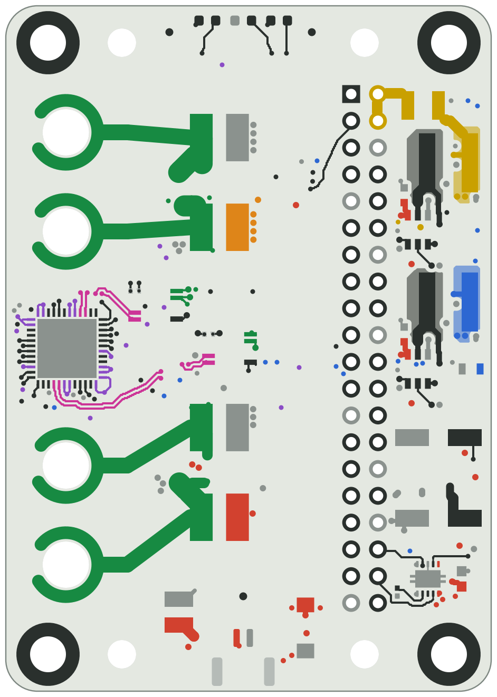<figcaption>Before, Top</figcaption></figure><figure>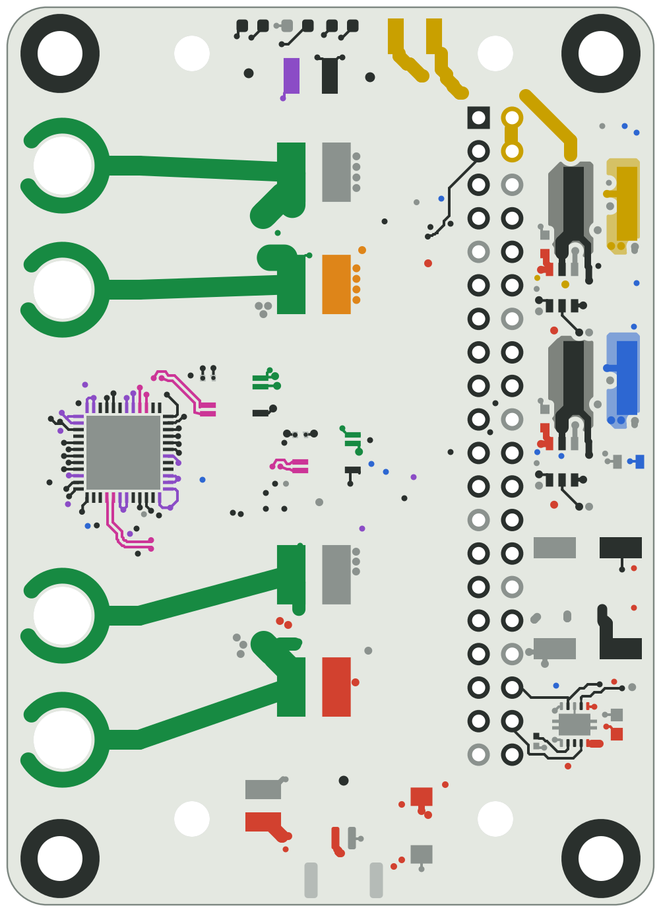<figcaption>After, Top</figcaption></figure></div>
<h3>Internal 1</h3><div class='pair'><figure>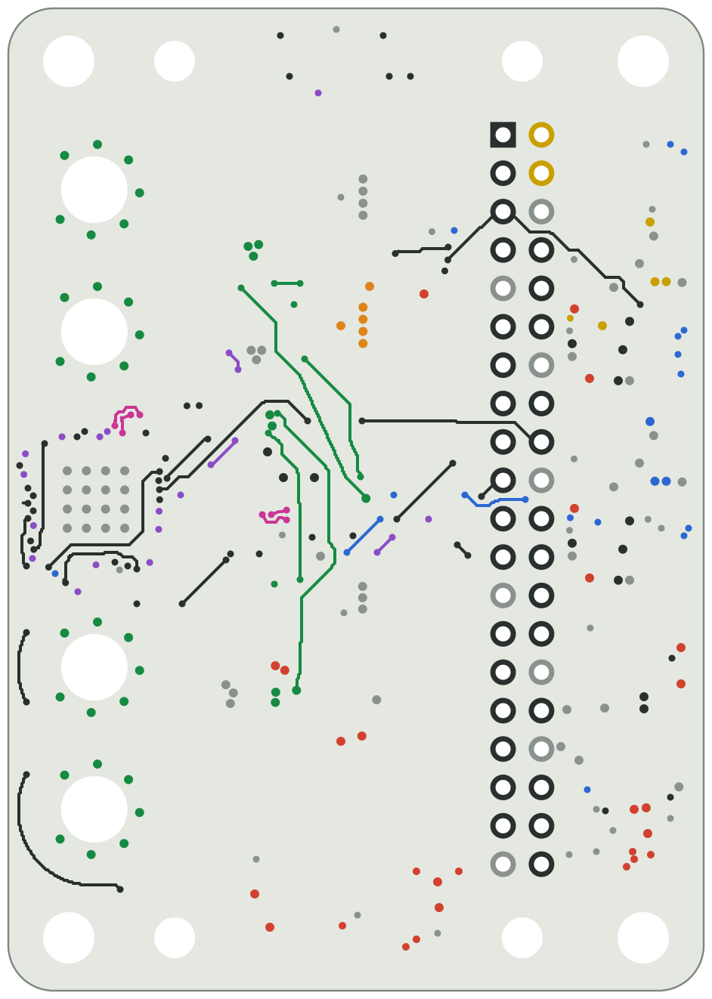<figcaption>Before, Internal 1</figcaption></figure><figure>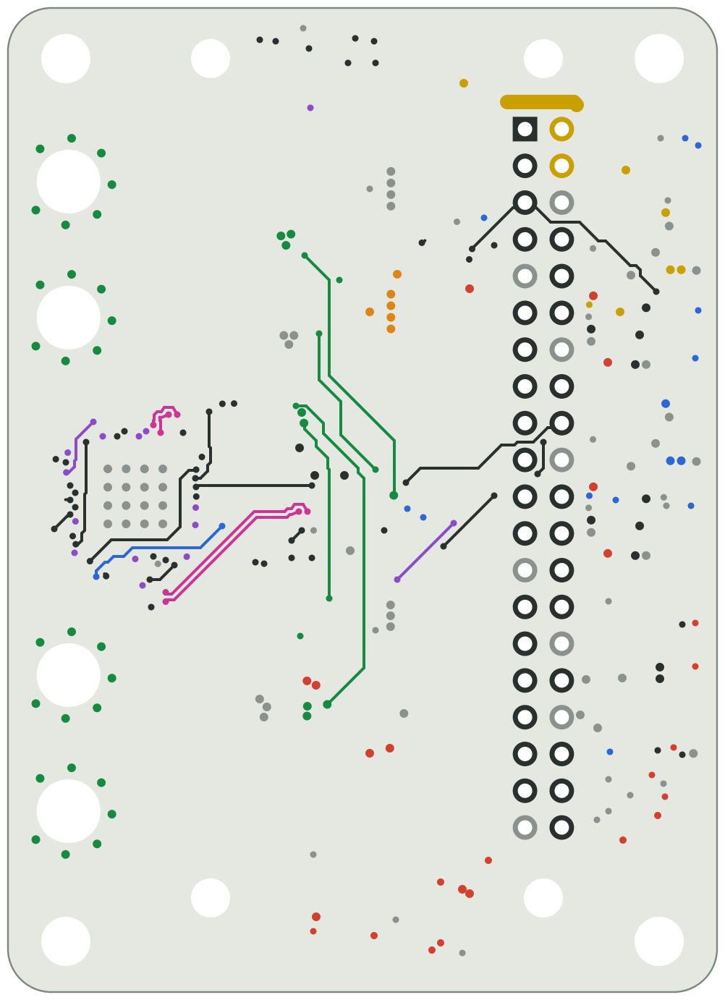<figcaption>After, Internal 1</figcaption></figure></div>
<h3>GND plane (In2)</h3><div class='pair'><figure>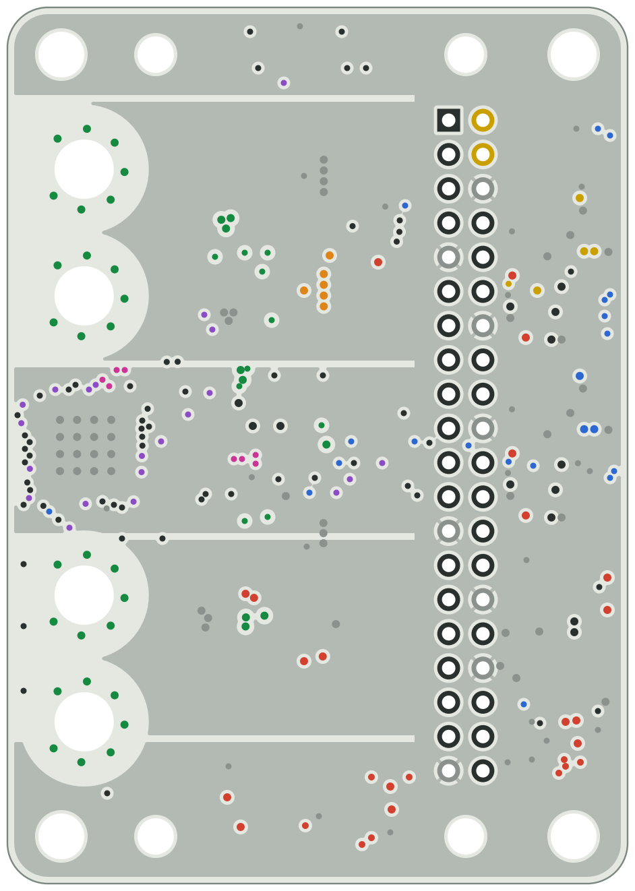<figcaption>Before, GND plane (In2)</figcaption></figure><figure>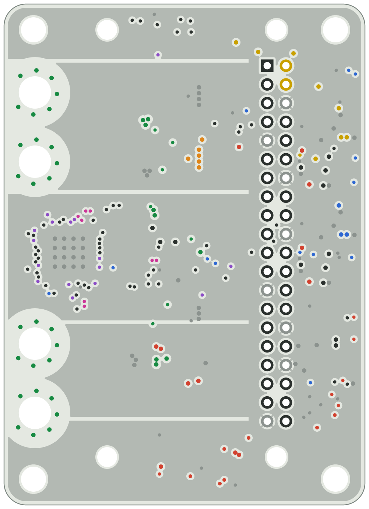<figcaption>After, GND plane (In2)</figcaption></figure></div>
<h3>Internal 2 (In3)</h3><div class='pair'><figure>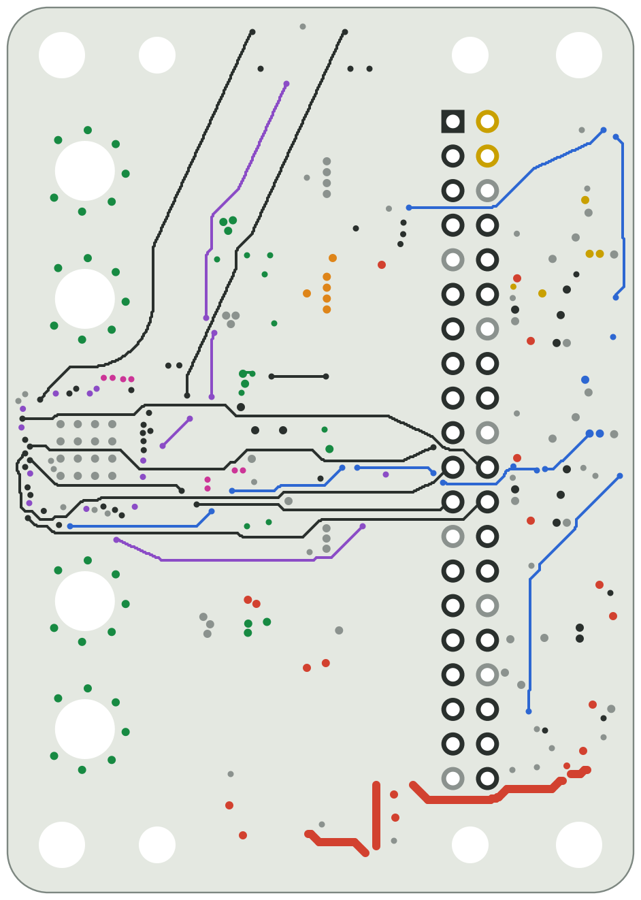<figcaption>Before, Internal 2 (In3)</figcaption></figure><figure>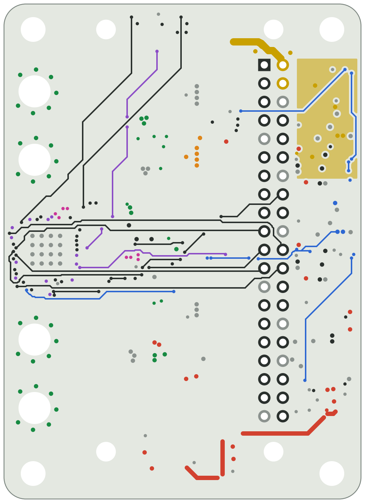<figcaption>After, Internal 2 (In3)</figcaption></figure></div>
<h3>PWR plane (In4)</h3><div class='pair'><figure>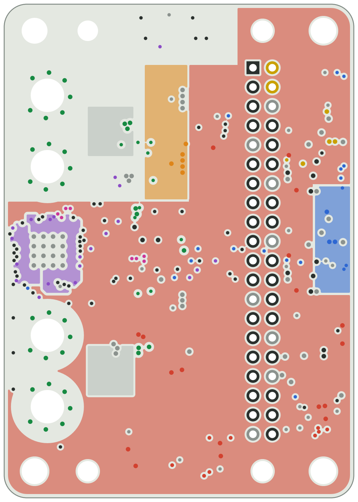<figcaption>Before, PWR plane (In4)</figcaption></figure><figure><figcaption>After, PWR plane (In4)</figcaption></figure></div>
<h3>Bottom</h3><div class='pair'><figure>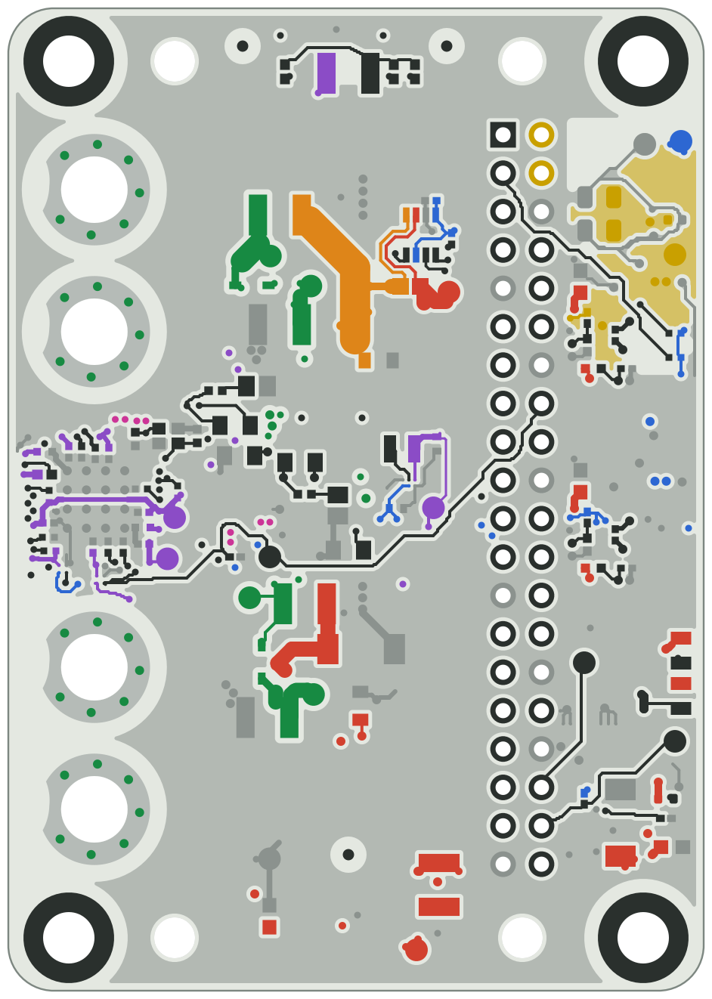<figcaption>Before, Bottom</figcaption></figure><figure>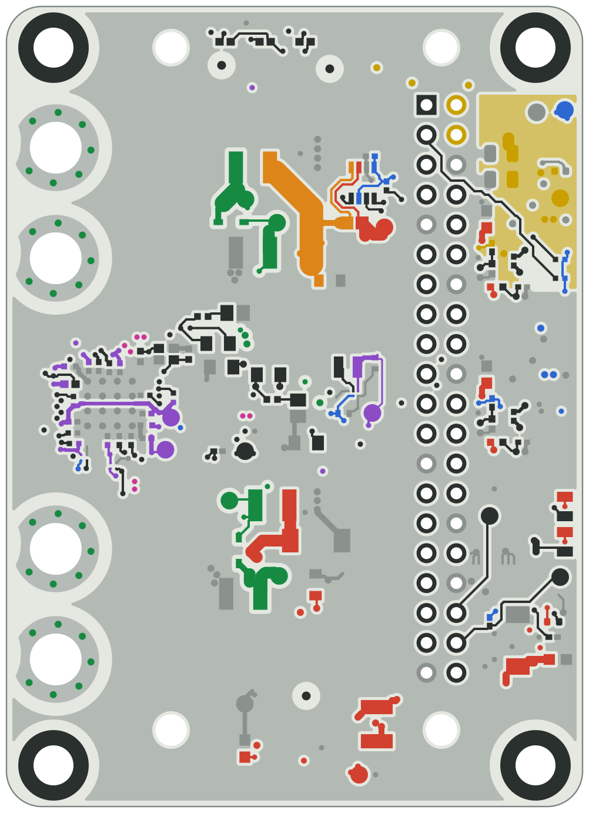<figcaption>After, Bottom</figcaption></figure></div>
<h2>The review regions, before and after</h2>
<h3>port1 pair <span class='mut' style='font-weight:normal;font-size:13px'>x -3.5…9.0, y 25.0…32.0 mm</span></h3><p class='mut'>Port-1 data pair: U1 pins 27/28 (north edge of U1) to T1 pads 1/2; the mote's U1 and T1 sit elsewhere, so the mote view shows only the ADIN block's copper placed as here</p>
<div class='pair'><figure>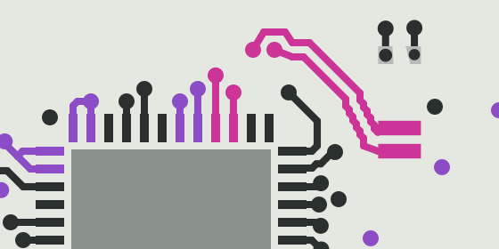<figcaption>Before, Top</figcaption></figure><figure><figcaption>After, Top</figcaption></figure></div>
<div class='pair'><figure>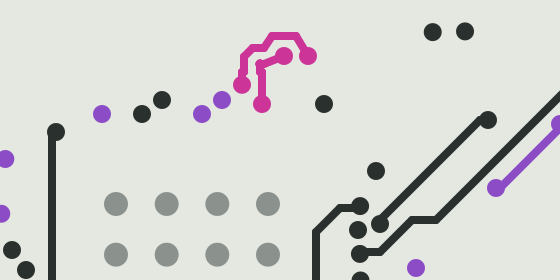<figcaption>Before, Internal 1</figcaption></figure><figure><figcaption>After, Internal 1</figcaption></figure></div>
<div class='pair'><figure>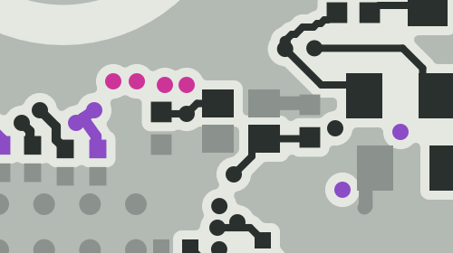<figcaption>Before, Bottom</figcaption></figure><figure>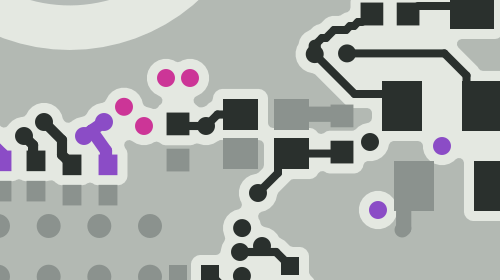<figcaption>After, Bottom</figcaption></figure></div>
<h3>port2 pair <span class='mut' style='font-weight:normal;font-size:13px'>x -4.0…14.0, y 33.0…40.0 mm</span></h3><p class='mut'>Port-2 data pair: U1 pins 4/5 (south edge) through the pocket's south exit to T2 pads 1/2</p>
<div class='pair'><figure>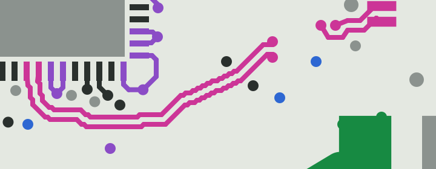<figcaption>Before, Top</figcaption></figure><figure>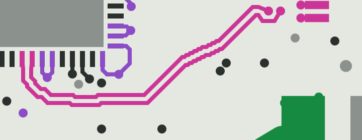<figcaption>After, Top</figcaption></figure></div>
<div class='pair'><figure>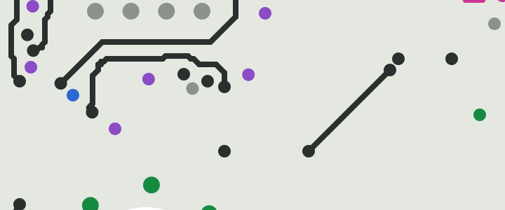<figcaption>Before, Internal 1</figcaption></figure><figure>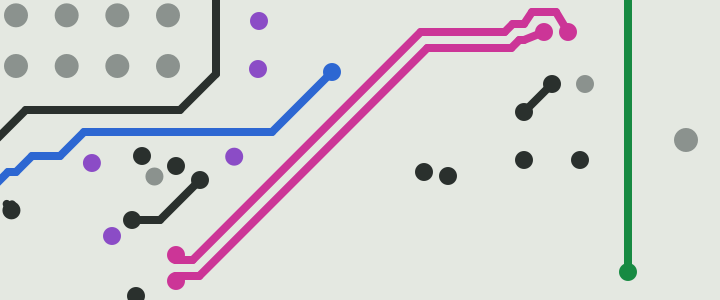<figcaption>After, Internal 1</figcaption></figure></div>
<div class='pair'><figure>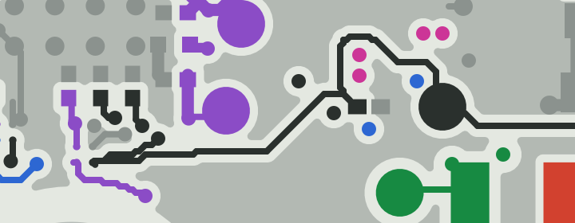<figcaption>Before, Bottom</figcaption></figure><figure><figcaption>After, Bottom</figcaption></figure></div>
<h3>int fanout <span class='mut' style='font-weight:normal;font-size:13px'>x -7.5…-3.0, y 28.0…33.0 mm</span></h3><p class='mut'>~{ADIN_INT} fan-out at the board's west edge: U1.39 → via → R1.1 (QE round 1 F2)</p>
<div class='pair'><figure>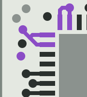<figcaption>Before, Top</figcaption></figure><figure><figcaption>After, Top</figcaption></figure></div>
<div class='pair'><figure>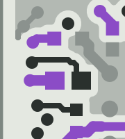<figcaption>Before, Bottom</figcaption></figure><figure>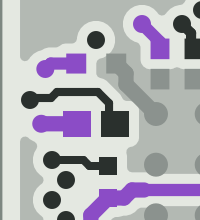<figcaption>After, Bottom</figcaption></figure></div>
<h3>u2 u3 pocket exit <span class='mut' style='font-weight:normal;font-size:13px'>x -7.0…5.0, y 35.0…40.0 mm</span></h3><p class='mut'>The pocket's south exit: U2 / U3 (1.8 V and 3.3 V switches, bottom) with their fan-out vias, the port-2 pair above, 3V3 / 1V8 / ADIN_PWR leaving east</p>
<div class='pair'><figure>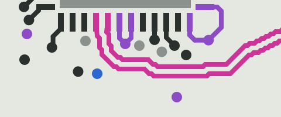<figcaption>Before, Top</figcaption></figure><figure>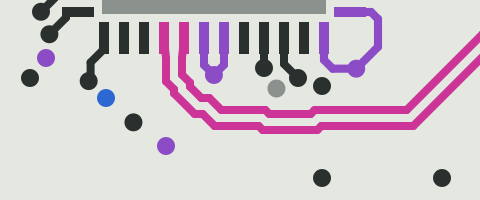<figcaption>After, Top</figcaption></figure></div>
<div class='pair'><figure>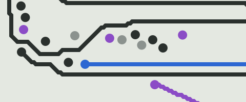<figcaption>Before, Internal 2 (In3)</figcaption></figure><figure>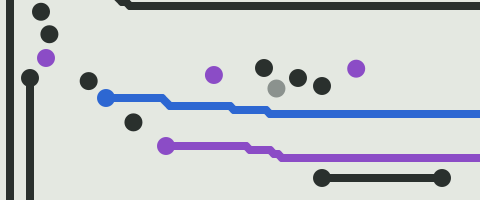<figcaption>After, Internal 2 (In3)</figcaption></figure></div>
<div class='pair'><figure>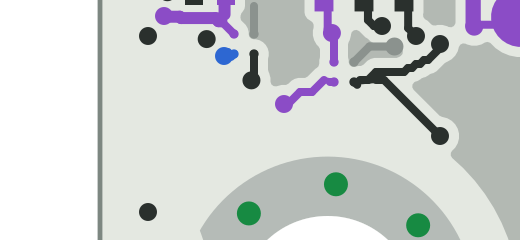<figcaption>Before, Bottom</figcaption></figure><figure><figcaption>After, Bottom</figcaption></figure></div>
<h3>t1 cluster <span class='mut' style='font-weight:normal;font-size:13px'>x 2.5…11.5, y 23.5…31.5 mm</span></h3><p class='mut'>T1 cluster (P1T block) and the bus legs to L1</p>
<div class='pair'><figure>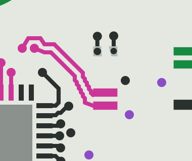<figcaption>Before, Top</figcaption></figure><figure>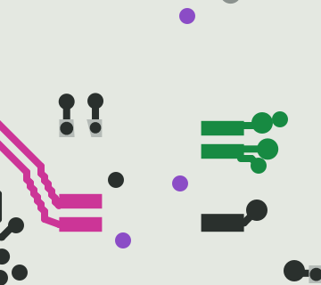<figcaption>After, Top</figcaption></figure></div>
<div class='pair'><figure>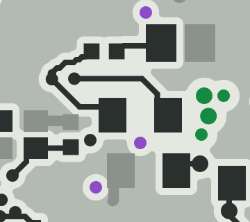<figcaption>Before, Bottom</figcaption></figure><figure>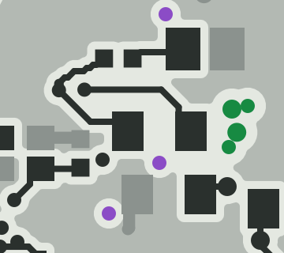<figcaption>After, Bottom</figcaption></figure></div>
<h3>t2 cluster <span class='mut' style='font-weight:normal;font-size:13px'>x 9.0…18.0, y 29.0…36.5 mm</span></h3><p class='mut'>T2 cluster (P2T block): the region clip at mote x 138.6 dropped the GND via that sat in front of the data pads</p>
<div class='pair'><figure>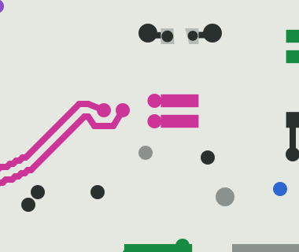<figcaption>Before, Top</figcaption></figure><figure>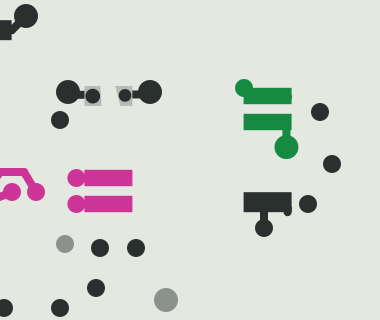<figcaption>After, Top</figcaption></figure></div>
<div class='pair'><figure>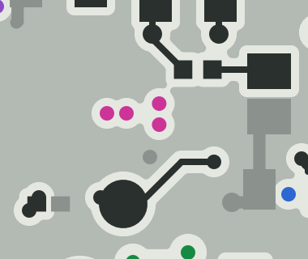<figcaption>Before, Bottom</figcaption></figure><figure><figcaption>After, Bottom</figcaption></figure></div>
<h3>u11 payload <span class='mut' style='font-weight:normal;font-size:13px'>x 27.0…38.5, y 49.0…59.0 mm</span></h3><p class='mut'>Load switch U11 at the strip's south end: VBUS in (pre-stitched via), VBUS_OUT to J5 (0.6 mm), its signals to J1</p>
<div class='pair'><figure>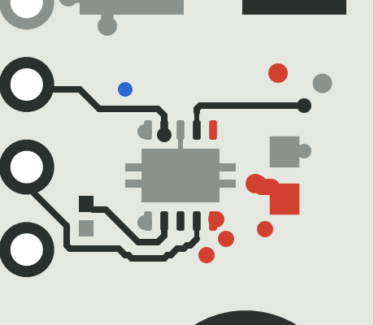<figcaption>Before, Top</figcaption></figure><figure>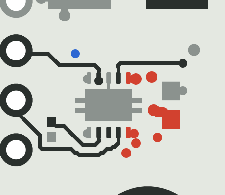<figcaption>After, Top</figcaption></figure></div>
<div class='pair'><figure>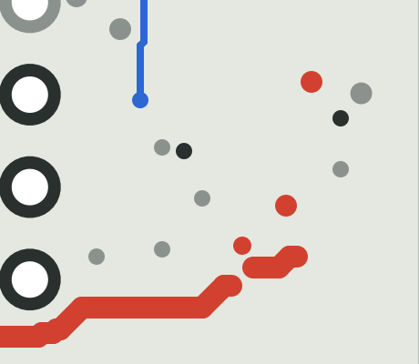<figcaption>Before, Internal 2 (In3)</figcaption></figure><figure>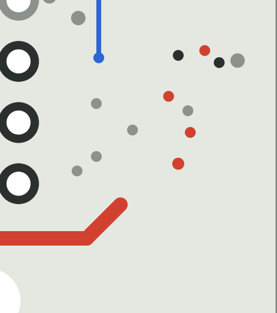<figcaption>After, Internal 2 (In3)</figcaption></figure></div>
<div class='pair'><figure>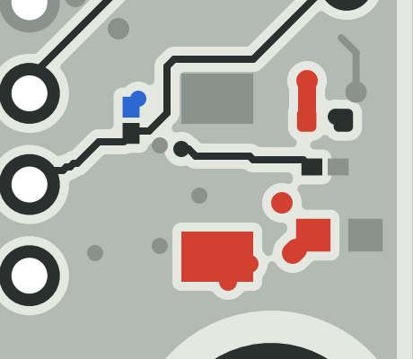<figcaption>Before, Bottom</figcaption></figure><figure>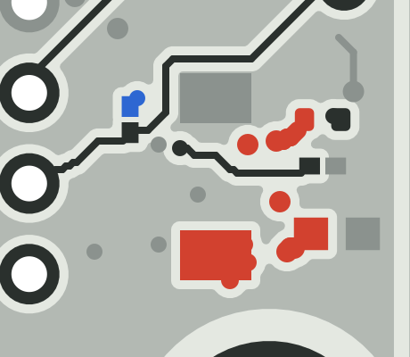<figcaption>After, Bottom</figcaption></figure></div>
<h3>pi5v strip north <span class='mut' style='font-weight:normal;font-size:13px'>x 28.5…38.5, y 6.0…25.0 mm</span></h3><p class='mut'>5 V cell under JP1 at the strip's north end: the bottom 5V_PI pour under the output caps and the divider tap</p>
<div class='pair'><figure><figcaption>Before, Top</figcaption></figure><figure>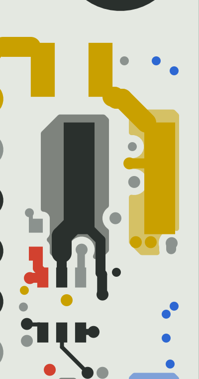<figcaption>After, Top</figcaption></figure></div>
<div class='pair'><figure>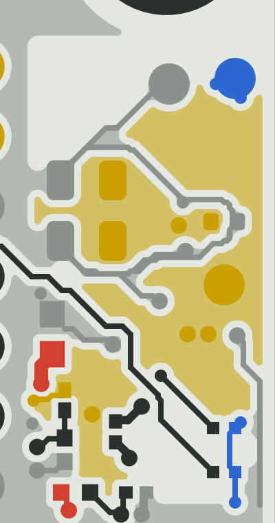<figcaption>Before, Bottom</figcaption></figure><figure>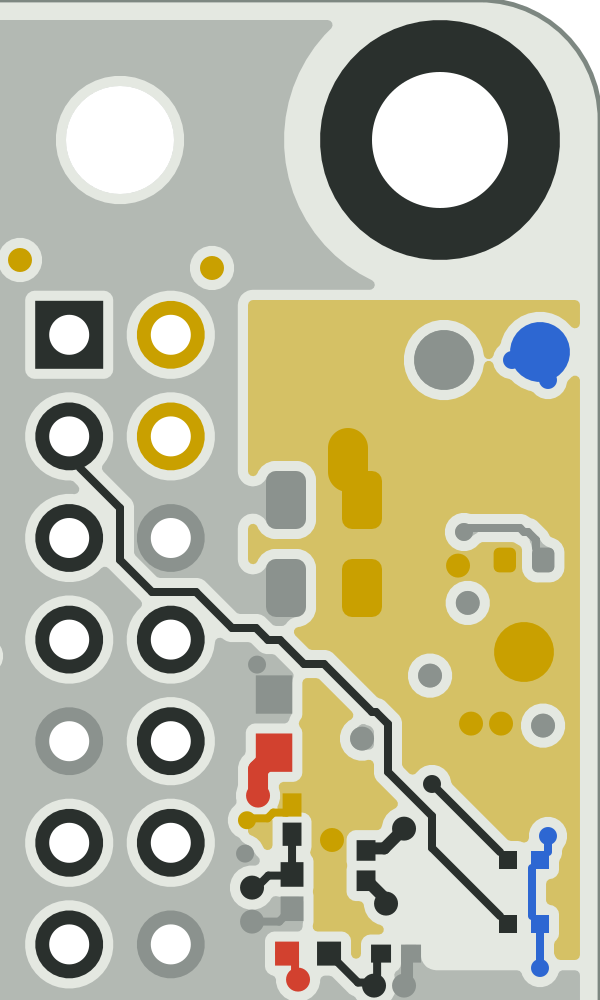<figcaption>After, Bottom</figcaption></figure></div>
<h3>insert mp1 <span class='mut' style='font-weight:normal;font-size:13px'>x -7.5…12.0, y 38.0…56.0 mm</span></h3><p class='mut'>Port-1 inductor L1 with the insert rings MP1 / MP2 and the bus feeds; the P1L block's copper</p>
<div class='pair'><figure>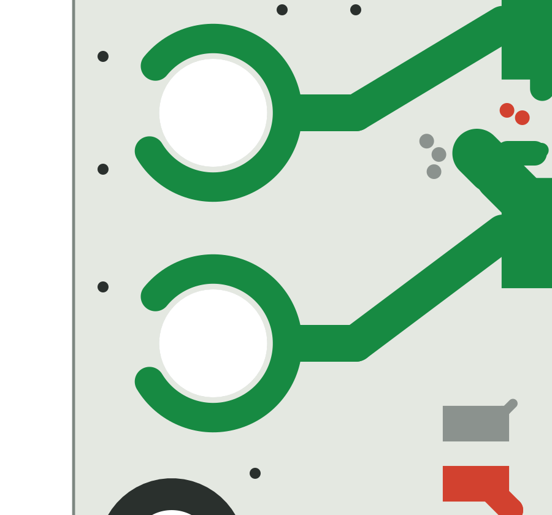<figcaption>Before, Top</figcaption></figure><figure>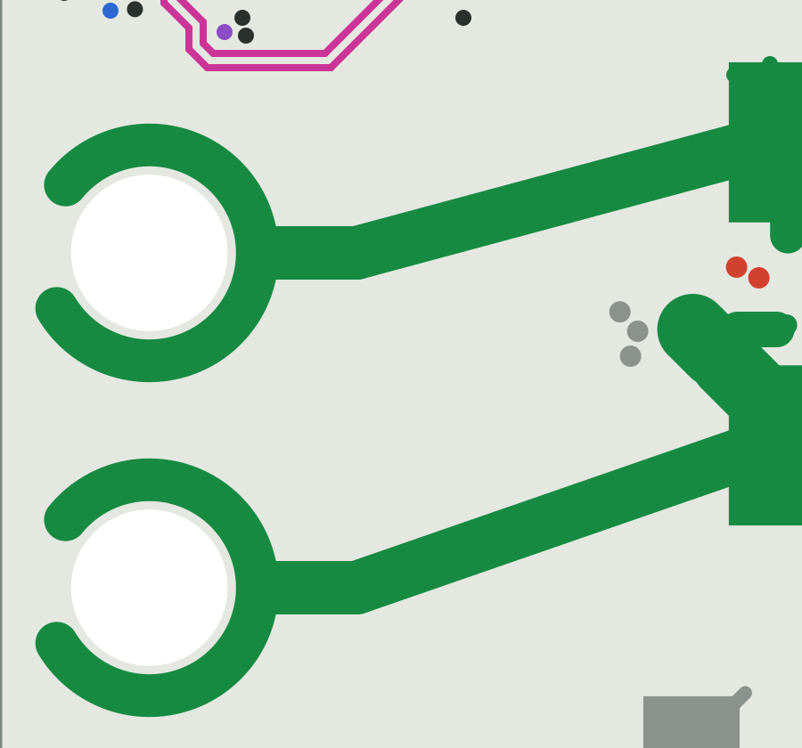<figcaption>After, Top</figcaption></figure></div>
<div class='pair'><figure>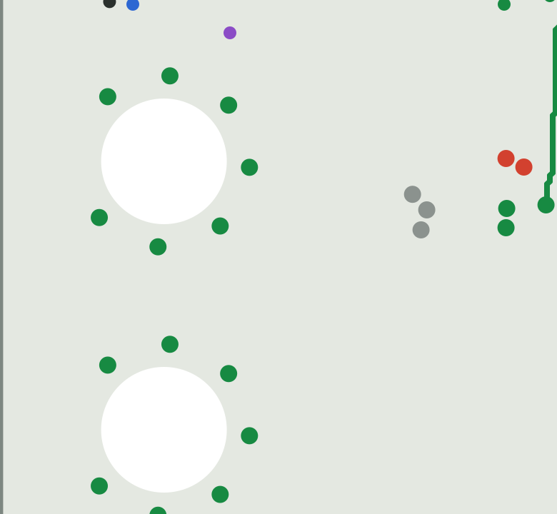<figcaption>Before, Internal 1</figcaption></figure><figure>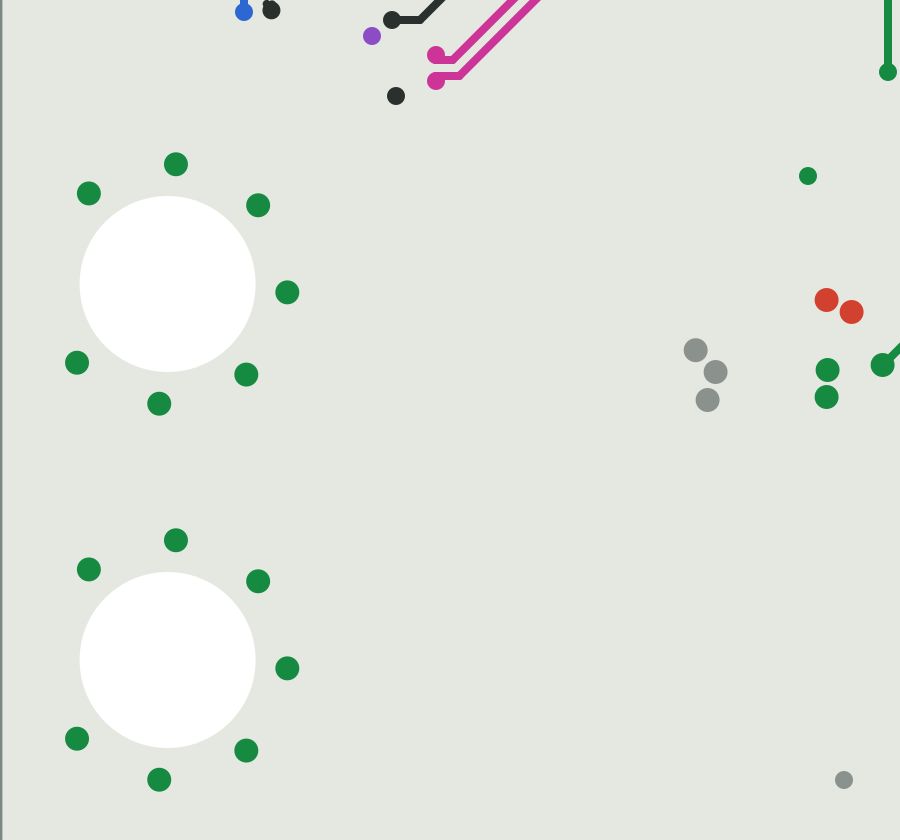<figcaption>After, Internal 1</figcaption></figure></div>
</main>